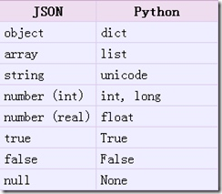
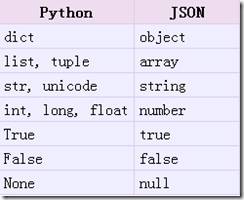

JSON(JavaScript Object Notation) 是一种轻量级的数据交换格式，它使得人们很容易的进行阅读和编写。同时也方便了机器进行解析和生成。适用于进行数据交互的场景，比如网站前台与后台之间的数据交互。
JSON和XML的比较可谓不相上下。
Python 2.7中自带了JSON模块，直接import json就可以使用了。
官方文档：http://docs.python.org/library/json.html
Json在线解析网站：http://www.json.cn/#
JSON
json简单说就是javascript中的对象和数组，所以这两种结构就是对象和数组两种结构，通过这两种结构可以表示各种复杂的结构
对象：对象在js中表示为
{ }括起来的内容，数据结构为{ key：value, key：value, ... }的键值对的结构，在面向对象的语言中，key为对象的属性，value为对应的属性值，所以很容易理解，取值方法为 对象.key 获取属性值，这个属性值的类型可以是数字、字符串、数组、对象这几种。数组：数组在js中是中括号
[ ]括起来的内容，数据结构为["Python", "javascript", "C++", ...]，取值方式和所有语言中一样，使用索引获取，字段值的类型可以是 数字、字符串、数组、对象几种。
导入json模块
import json
json模块提供了四个功能：dumps、dump、loads、load，用于字符串 和 python数据类型间进行转换。
1. json.loads()
把Json格式字符串解码转换成Python对象 从json到python的类型转化对照如下：

# json_loads.py
import json
strList = '[1, 2, 3, 4]'
strDict = '{"city": "北京", "name": "大猫"}'
json.loads(strList)
# [1, 2, 3, 4]
json.loads(strDict) # json数据自动按Unicode存储
# {u'city': u'\u5317\u4eac', u'name': u'\u5927\u732b'}
2. json.dumps()
实现python类型转化为json字符串，返回一个str对象 把一个Python对象编码转换成Json字符串
从python原始类型向json类型的转化对照如下：

# json_dumps.py
import json
import chardet
listStr = [1, 2, 3, 4]
tupleStr = (1, 2, 3, 4)
dictStr = {"city": "北京", "name": "大猫"}
json.dumps(listStr)
# '[1, 2, 3, 4]'
json.dumps(tupleStr)
# '[1, 2, 3, 4]'
# 注意：json.dumps() 序列化时默认使用的ascii编码
# 添加参数 ensure_ascii=False 禁用ascii编码，按utf-8编码
# chardet.detect()返回字典, 其中confidence是检测精确度
json.dumps(dictStr)
# '{"city": "\\u5317\\u4eac", "name": "\\u5927\\u5218"}'
chardet.detect(json.dumps(dictStr))
# {'confidence': 1.0, 'encoding': 'ascii'}
print json.dumps(dictStr, ensure_ascii=False)
# {"city": "北京", "name": "大刘"}
chardet.detect(json.dumps(dictStr, ensure_ascii=False))
# {'confidence': 0.99, 'encoding': 'utf-8'}
chardet是一个非常优秀的编码识别模块，可通过pip安装
3. json.dump()
将Python内置类型序列化为json对象后写入文件
# json_dump.py
import json
listStr = [{"city": "北京"}, {"name": "大刘"}]
json.dump(listStr, open("listStr.json","w"), ensure_ascii=False)
dictStr = {"city": "北京", "name": "大刘"}
json.dump(dictStr, open("dictStr.json","w"), ensure_ascii=False)
4. json.load()
读取文件中json形式的字符串元素 转化成python类型
# json_load.py
import json
strList = json.load(open("listStr.json"))
print strList
# [{u'city': u'\u5317\u4eac'}, {u'name': u'\u5927\u5218'}]
strDict = json.load(open("dictStr.json"))
print strDict
# {u'city': u'\u5317\u4eac', u'name': u'\u5927\u5218'}
JsonPath
JsonPath 是一种信息抽取类库，是从JSON文档中抽取指定信息的工具，提供多种语言实现版本，包括：Javascript, Python， PHP 和 Java。
JsonPath 对于 JSON 来说，相当于 XPATH 对于 XML。
下载地址：https://pypi.python.org/pypi/jsonpath
安装方法：点击
Download URL链接下载jsonpath，解压之后执行python setup.py install
JsonPath与XPath语法对比：
Json结构清晰，可读性高，复杂度低，非常容易匹配，下表中对应了XPath的用法。
| XPath | JSONPath | 描述 |
|---|---|---|
/ |
$ |
根节点 |
. |
@ |
现行节点 |
/ |
.or[] |
取子节点 |
.. |
n/a | 取父节点，Jsonpath未支持 |
// |
.. |
就是不管位置，选择所有符合条件的条件 |
* |
* |
匹配所有元素节点 |
@ |
n/a | 根据属性访问，Json不支持，因为Json是个Key-value递归结构，不需要。 |
[] |
[] |
迭代器标示（可以在里边做简单的迭代操作，如数组下标，根据内容选值等） |
[,] |
||
[] |
?() |
支持过滤操作. |
| n/a | () |
支持表达式计算 |
() |
n/a | 分组，JsonPath不支持 |
示例：
我们以拉勾网城市JSON文件 http://www.lagou.com/lbs/getAllCitySearchLabels.json 为例，获取所有城市。
# jsonpath_lagou.py
import urllib2
import jsonpath
import json
import chardet
url = 'http://www.lagou.com/lbs/getAllCitySearchLabels.json'
request =urllib2.Request(url)
response = urllib2.urlopen(request)
html = response.read()
# 把json格式字符串转换成python对象
jsonobj = json.loads(html)
# 从根节点开始，匹配name节点
citylist = jsonpath.jsonpath(jsonobj,'$..name')
print citylist
print type(citylist)
fp = open('city.json','w')
content = json.dumps(citylist, ensure_ascii=False)
print content
fp.write(content.encode('utf-8'))
fp.close()
注意事项：
json.loads() 是把 Json格式字符串解码转换成Python对象，如果在json.loads的时候出错，要注意被解码的Json字符的编码。
如果传入的字符串的编码不是UTF-8的话，需要指定字符编码的参数 encoding
dataDict = json.loads(jsonStrGBK);
dataJsonStr是JSON字符串，假设其编码本身是非UTF-8的话而是GBK 的，那么上述代码会导致出错，改为对应的：
dataDict = json.loads(jsonStrGBK, encoding="GBK");如果 dataJsonStr通过encoding指定了合适的编码，但是其中又包含了其他编码的字符，则需要先去将dataJsonStr转换为Unicode，然后再指定编码格式调用json.loads()
``` python
dataJsonStrUni = dataJsonStr.decode("GB2312"); dataDict = json.loads(dataJsonStrUni, encoding="GB2312");